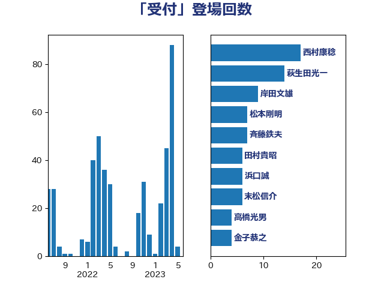

単語「受付」

| 西村康稔 | 自由民主党 | 17 回 |
| 萩生田光一 | 自由民主党 | 14 回 |
| 岸田文雄 | 自由民主党 | 9 回 |
| 松本剛明 | 自由民主党 | 7 回 |
| 斉藤鉄夫 | 公明党 | 7 回 |
| 田村貴昭 | 日本共産党 | 6 回 |
| 浜口誠 | 国民民主党 | 6 回 |
| 末松信介 | 自由民主党 | 6 回 |
| 高橋光男 | 公明党 | 4 回 |
| 金子恭之 | 自由民主党 | 4 回 |
| 野田聖子 | 自由民主党 | 4 回 |
| 川田龍平 | 立憲民主党 | 4 回 |
| 山際大志郎 | 自由民主党 | 4 回 |
| 宮本岳志 | 日本共産党 | 4 回 |
| 佐藤英道 | 公明党 | 4 回 |
| 伊藤岳 | 日本共産党 | 4 回 |
| 長谷川英晴 | 自由民主党 | 3 回 |
| 金子道仁 | 日本維新の会 | 3 回 |
| 芳賀道也 | 国民民主党 | 3 回 |
| 田所嘉徳 | 自由民主党 | 3 回 |
| 渡辺猛之 | 自由民主党 | 3 回 |
| 河野太郎 | 自由民主党 | 3 回 |
| 東徹 | 日本維新の会 | 3 回 |
| 寺田稔 | 自由民主党 | 3 回 |
| 加藤勝信 | 自由民主党 | 3 回 |
| たがや亮 | れいわ新選組 | 3 回 |
| 高木真理 | 立憲民主党 | 2 回 |
| 音喜多駿 | 日本維新の会 | 2 回 |
| 輿水恵一 | 公明党 | 2 回 |
| 谷田川元 | 立憲民主党 | 2 回 |
| 藤巻健太 | 日本維新の会 | 2 回 |
| 石川博崇 | 公明党 | 2 回 |
| 田畑裕明 | 自由民主党 | 2 回 |
| 田村智子 | 日本共産党 | 2 回 |
| 田村憲久 | 自由民主党 | 2 回 |
| 田中健 | 国民民主党 | 2 回 |
| 浜田聡 | NHK党 | 2 回 |
| 浅野哲 | 国民民主党 | 2 回 |
| 河西宏一 | 公明党 | 2 回 |
| 枝野幸男 | 立憲民主党 | 2 回 |
| 本田顕子 | 自由民主党 | 2 回 |
| 岡田直樹 | 自由民主党 | 2 回 |
| 山本香苗 | 公明党 | 2 回 |
| 尾崎正直 | 自由民主党 | 2 回 |
| 大西健介 | 立憲民主党 | 2 回 |
| 塩田博昭 | 公明党 | 2 回 |
| 吉田統彦 | 立憲民主党 | 2 回 |
| 吉田とも代 | 日本維新の会 | 2 回 |
| 吉川元 | 立憲民主党 | 2 回 |
| 務台俊介 | 自由民主党 | 2 回 |
| 中野洋昌 | 公明党 | 2 回 |
| 齋藤健 | 自由民主党 | 1 回 |
| 青柳陽一郎 | 立憲民主党 | 1 回 |
| 青山大人 | 立憲民主党 | 1 回 |
| 阿部知子 | 立憲民主党 | 1 回 |
| 長浜博行 | 無所属 | 1 回 |
| 長友慎治 | 国民民主党 | 1 回 |
| 鈴木庸介 | 立憲民主党 | 1 回 |
| 金子俊平 | 自由民主党 | 1 回 |
| 野間健 | 立憲民主党 | 1 回 |
| 野村哲郎 | 自由民主党 | 1 回 |
| 重徳和彦 | 立憲民主党 | 1 回 |
| 遠藤敬 | 日本維新の会 | 1 回 |
| 西村智奈美 | 立憲民主党 | 1 回 |
| 西岡秀子 | 国民民主党 | 1 回 |
| 藤井比早之 | 自由民主党 | 1 回 |
| 舩後靖彦 | れいわ新選組 | 1 回 |
| 舟山康江 | 国民民主党 | 1 回 |
| 緑川貴士 | 立憲民主党 | 1 回 |
| 紙智子 | 日本共産党 | 1 回 |
| 笠井亮 | 日本共産党 | 1 回 |
| 福重隆浩 | 公明党 | 1 回 |
| 福田昭夫 | 立憲民主党 | 1 回 |
| 神谷政幸 | 自由民主党 | 1 回 |
| 石垣のりこ | 立憲民主党 | 1 回 |
| 石井苗子 | 日本維新の会 | 1 回 |
| 石井正弘 | 自由民主党 | 1 回 |
| 石井拓 | 自由民主党 | 1 回 |
| 白石洋一 | 立憲民主党 | 1 回 |
| 源馬謙太郎 | 立憲民主党 | 1 回 |
| 深澤陽一 | 自由民主党 | 1 回 |
| 浮島智子 | 公明党 | 1 回 |
| 池下卓 | 日本維新の会 | 1 回 |
| 比嘉奈津美 | 自由民主党 | 1 回 |
| 横沢高徳 | 立憲民主党 | 1 回 |
| 森屋隆 | 立憲民主党 | 1 回 |
| 梅谷守 | 立憲民主党 | 1 回 |
| 梅村みずほ | 日本維新の会 | 1 回 |
| 柴田巧 | 日本維新の会 | 1 回 |
| 松野明美 | 日本維新の会 | 1 回 |
| 松沢成文 | 日本維新の会 | 1 回 |
| 本村伸子 | 日本共産党 | 1 回 |
| 本庄知史 | 立憲民主党 | 1 回 |
| 早稲田ゆき | 立憲民主党 | 1 回 |
| 日下正喜 | 公明党 | 1 回 |
| 後藤茂之 | 自由民主党 | 1 回 |
| 後藤祐一 | 立憲民主党 | 1 回 |
| 平将明 | 自由民主党 | 1 回 |
| 岸真紀子 | 立憲民主党 | 1 回 |
| 岩谷良平 | 日本維新の会 | 1 回 |
| 岩渕友 | 日本共産党 | 1 回 |
| 岡本あき子 | 立憲民主党 | 1 回 |
| 山本太郎 | れいわ新選組 | 1 回 |
| 尾身朝子 | 自由民主党 | 1 回 |
| 小寺裕雄 | 自由民主党 | 1 回 |
| 宮崎雅夫 | 自由民主党 | 1 回 |
| 宮崎勝 | 公明党 | 1 回 |
| 大串博志 | 立憲民主党 | 1 回 |
| 塩川鉄也 | 日本共産党 | 1 回 |
| 塩崎彰久 | 自由民主党 | 1 回 |
| 堤かなめ | 立憲民主党 | 1 回 |
| 堀場幸子 | 日本維新の会 | 1 回 |
| 坂本祐之輔 | 立憲民主党 | 1 回 |
| 和田政宗 | 自由民主党 | 1 回 |
| 古賀之士 | 立憲民主党 | 1 回 |
| 北側一雄 | 公明党 | 1 回 |
| 加藤竜祥 | 自由民主党 | 1 回 |
| 倉林明子 | 日本共産党 | 1 回 |
| 住吉寛紀 | 日本維新の会 | 1 回 |
| 伊藤孝江 | 公明党 | 1 回 |
| 井野俊郎 | 自由民主党 | 1 回 |
| 井上貴博 | 自由民主党 | 1 回 |
| 井上哲士 | 日本共産党 | 1 回 |
| 中川貴元 | 自由民主党 | 1 回 |
| 三上えり | 立憲民主党 | 1 回 |
| 一谷勇一郎 | 日本維新の会 | 1 回 |
| おおつき紅葉 | 立憲民主党 | 1 回 |